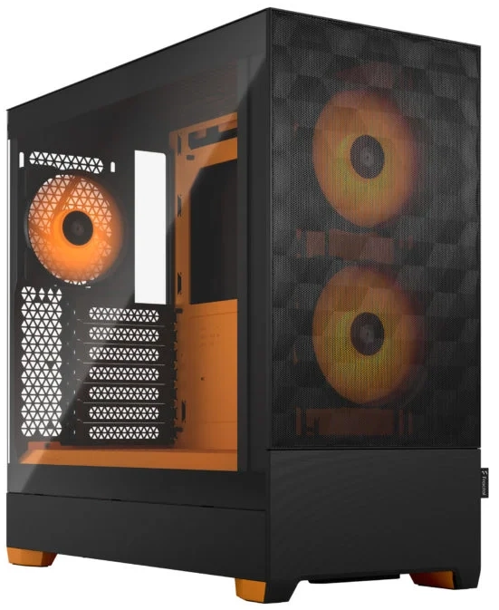

Počítačová skříň
Počítačová skříň slouží k fyzickému umístění a ochraně jednotlivých komponent počítače. Zajišťuje jejich bezpečné uchycení, umožňuje správné vedení kabeláže a zároveň ovlivňuje proudění vzduchu, které je důležité pro chlazení celé sestavy.
Výběr vhodné skříně má proto vliv nejen na kompatibilitu komponent, ale také na teploty, hlučnost a celkový komfort při používání počítače.

Hlavní parametry při výběru skříně
- Formát skříně – určuje velikost skříně a kompatibilitu se základní deskou. Výrobci obvykle uvádějí maximální podporovaný formát základní desky (například ATX, Micro ATX nebo Mini-ITX).
Větší skříně většinou nabízejí více prostoru pro komponenty, lepší možnosti chlazení a pohodlnější montáž. Menší skříně jsou naopak kompaktnější, ale mohou omezovat výběr komponent a práci uvnitř sestavy.
Většina skříní určených pro větší formáty základních desek umožňuje instalaci i menších desek. Například do ATX skříně lze běžně osadit základní desku formátu Micro ATX.
Vedle toho se používají i obchodní názvy jako Mini Tower, Midi Tower nebo Full Tower. Ty ale spíše popisují fyzickou velikost skříně a samy o sobě přesně neurčují kompatibilitu se základní deskou.
- Kompatibilita komponent – při výběru skříně je potřeba ověřit, jestli nabízí dostatek prostoru pro všechny použité komponenty.
Důležitá je hlavně maximální délka grafické karty a maximální výška chladiče procesoru.
Pokud plánujeme větší počet disků, je vhodné zkontrolovat také počet pozic pro 2,5" a 3,5" úložiště.
- Umístění zdroje – napájecí zdroj bývá ve skříni umístěný buď nahoře, nebo dole.
Moderní skříně většinou používají spodní umístění zdroje, díky kterému může zdroj nasávat chladnější vzduch zvenku skříně a nepodílí se tak na proudění vzduchu uvnitř počítače, protože jej ihned vyfukuje zadní částí ven.
- Přední panel (front panel) – obsahuje konektory a ovládací prvky, které jsou snadno dostupné při běžném používání počítače.
Obvykle zde najdeme USB porty, audio konektory pro sluchátka a mikrofon, tlačítko napájení a resetovací tlačítko.
Při výběru je dobré myslet i na umístění samotné skříně. Pokud bude například zastrčená pod nízkým stolkem, nemusí být praktické mít všechny konektory a tlačítka na vrchní straně.
- Pozice pro ventilátory a chlazení – skříň nabízí různé pozice pro instalaci ventilátorů, které zajišťují proudění vzduchu uvnitř počítače.
Ventilátory se nejčastěji umisťují do přední, zadní a horní části skříně.
Počet a velikost podporovaných ventilátorů ovlivňuje možnosti chlazení celé sestavy. Některé skříně navíc podporují i instalaci radiátorů kapalinového chlazení.
Při výběru je proto dobré sledovat nejen počet pozic, ale i jejich velikost a kompatibilitu s použitým chlazením.
- Kvalita zpracování a design – skříně se liší použitými materiály, pevností konstrukce a celkovou kvalitou zpracování.
Kvalitnější modely bývají pevnější, méně vibrují a často mají lépe řešený vnitřní prostor pro vedení kabeláže. Mohou mít také prachové filtry, které zabraňují zanášení skříně prachem.
Design je už hodně subjektivní záležitost. Někomu vyhovuje jednoduchá nenápadná skříň, jiný preferuje průhlednou bočnici, RGB osvětlení nebo výraznější herní vzhled.